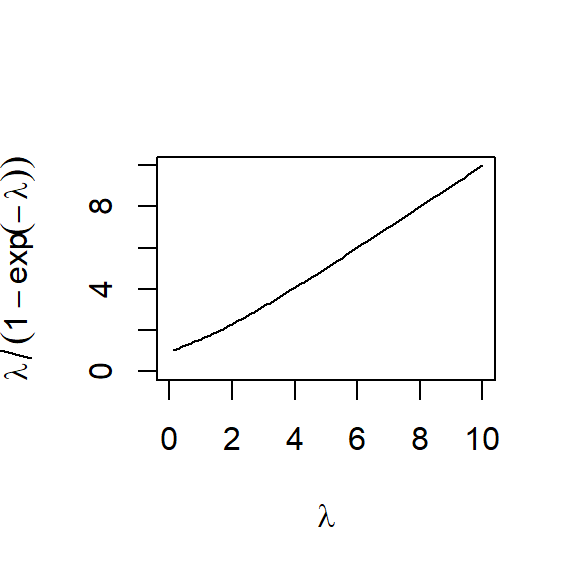

A primary focus for insurers is estimating the magnitude of aggregate claims it must bear under its insurance contracts. Aggregate claims are affected by both the frequency and the severity of the insured event. Decomposing aggregate claims into these two components, each of which warrant significant attention, is essential for analysis and pricing. This chapter discusses frequency distributions, summary measures, and parameter estimation techniques.
Although not needed to go through the tutorials, some users may wish to download the overheads that the videos are based on.
By watching the videos and working through the tutorial exercises, you will get an appreciation for frequency modeling. For a deeper dive, see the corresponding chapter in the textbook, Chapter Two of Loss Data Analytics.
2.1 Basic Frequency Distributions
In this section, you learn how to:
Determine quantities that summarize a distribution such as the (cumulative) distribution as well as moments such as the mean and variance.
Define and compute the moment and probability generating functions.
Describe and understand relationships among three important frequency distributions, the binomial, Poisson, and negative binomial distributions.
Video: Basic Frequency Distributions
Overheads: Basic Frequency Distributions (Click Tab to View)
Hide
Hide
Hide
Hide
Hide
Hide
Hide
Hide
2.1.1 Exercise. Representing the Number of Cyber Events with a Binomial Distribution
Assignment Text
Cyber risk for a firm is based on its liability for a data breach involving sensitive customer information, such as Social Security numbers, credit card numbers, account numbers, driver’s license numbers and health records. A company models its cyber risk using the following assumptions:
In any calendar quarter, there can be at most one cyber event.
In any calendar quarter, the probability of a cyber event is 0.1.
The numbers of cyber events in different calendar quarters are mutually independent.
Based on these assumptions, you represent the total number of cyber events as a binomial distribution.
Instructions
Identify the binomial distribution parameters for the number of cyber events in a 12 quarter (3 year) period.
Calculate the probability that there are \(k\) cyber events for \(k = 0, 1, \ldots, 12\) using the function dbinom().
Create a data frame to present your results. All values within a specific column should be rounded to the same number of decimal places. Display the data frame.
Graph the probability mass function of the number of cyber events using the function barplot(). Include a descriptive title and axis labels for the graph.
2.1.2 Exercise. Representing the Number of Cyber Events with a Poisson Distribution
Assignment Text
Another company is also concerned with cyber risk. Compared to the company in the prior exercise, this company is larger and does not wish to assume at most one cyber event in a quarter. Moreover, it believes that the distribution of cyber events is a function of its technical support staff size that has increased over time. Thus, it wishes to model the number of cyber events as a Poisson distribution with expected number of events as:
Assuming that the numbers of cyber events in different calendar quarters are mutually independent, the total number of cyber events over the three year period (12 quarters) has a Poisson distribution with expected number \(\lambda = 2.7\). (Recall that the sum of independent Poisson random variables has a Poisson distribution.)
Instructions
Graph the probability mass function (pmf) of the number of cyber events using the function barplot().
Calculate the pmf and the cumulative probability distribution function for \(k = 0, 1, \ldots, 12\) cyber events
using the functions dpois(), ppois(). Create a data frame to present your results and display the data frame.
From your data frame, identify the 95th percentile. Confirm your result using the qpois() function.
How are the probabilities changing over time? Plot the probability of zero cyber events versus quarter number \(k = 0, 1, \ldots, 12\).
Your supervisor would like to have a better understanding of relationships among three important count distributions, the binomial, Poisson, and negative binomial. You could develop a mathematical appendix, demonstrating how:
A binomial distribution with parameters \(m \to \infty\) and \(mq \to \lambda\) converges to a Poisson distribution.
A negative binomial distribution with mean parameter \(r \beta = \lambda\) and dispersion parameter \(r\) converges to a Poisson distribution as \(r \to \infty\).
Instead, you decide to demonstrate these relationships graphically.
Instructions
Plot the probability mass function (pmf) of the binomial distribution with \(m=12\) and \(q=0.1\) over \(k = 0, 1, \ldots, 12\) potential outcomes. Superimpose on this plot a Poisson pmf with the same mean using the lines() function.
Repeat this step with the same Poisson distribution but, for the binomial distribution, multiply \(m\) by 5 and divide \(q\) by 5. (You should see how the binomial becomes a better approximation to the Poisson.)
Determine the pmf of the negative binomial distribution with mean parameter \(r \beta\) and dispersion parameter \(r=1\) using the function dnbinom(). Use the same mean as for the binomial distribution.
Demonstrate the convergence of the negative binomial to the Poisson by creating side-by-side graphical comparisons. That is, using the par(mfrow = …) syntax, compare:
A plot of this negative binomial distribution pmf, superimposed with baseline Poisson distribution (with the same mean).
A plot of the negative binomial distribution pmf with the same mean and dispersion parameter \(r=100\), superimposed with baseline Poisson distribution.
where \(N\) is a count random variable. From Section 2.3 of the text, we know that:
if \(a=0\) and \(b=\lambda\), then the recursion yields a Poisson distribution with parameter \(\lambda\)
if \(a=-q/(1-q)\) and \(b=(m+1)q/(1+q)\), then the recursion yields a binomial distribution with parameters \(m\) and \(q\)
if \(a=\beta/(1+\beta)\) and \(b=(r-1)\beta/(1+\beta)\), then the recursion yields a negative binomial distribution with parameters \(r\) and \(\beta\).
The \((a,b,0)\) class is a foundation for other, more complex, distributions, so let us check that we understand the recursions.
Instructions
For \(k=0, \ldots, 20\), using \(\lambda = 1.24\) obtain \(p_k\) values using dpois().
With the starting value \(p_0 = \exp(-\lambda)\), use the recursive \((a,b,0)\) formula to obtain these probability values.
Check your code by summing over the absolute value of the differences between the dpois and the \((a,b,0)\) generated values.
For \(k=0, \ldots, 20\), obtain \(p_k\) values using the negative binomial distribution using the function dnbinom(). Use the same mean as for the Poisson distribution but let the variance be 1.1 times the mean. Hint. See the Loss Data Analytics Summary of Distributions for the parameterization used in this short course. It differs from that used by the R package.
Use the recursive \((a,b,0)\) formula to obtain these probability values.
Check your code by summing over the absolute value of the differences between the dnbinom and the \((a,b,0)\) generated values.
2.2.2 Exercise. Reverse Engineering and Recursive R Functions
Assignment Text
You want to generate probabilities from the \((a,b,0)\) class so that later on you will be able to modify your code to produce alternative distributions (the subject of Section 2.5), a bit of so-called “reverse engineering.” In the first part of this problem, from a known distribution (e.g., the binomial), you will compute the ratio
\[
\frac{k ~p_k}{p_{k-1}} = a k + b , \quad k\ge 1 ,
\]
to determine values of \(a\) and \(b\). The second part of this problem utilizes recursive R functions. This is a function defined in terms of the same function but at a prior iteration. The classic example is the factorial function \(f(n) = n!\) so \(f(n) = n f(n-1)\). For example, you can define the function
to determine that recursive.factorial(5) = 120. In this problem, we use a recursive R function to generate \((a,b,0)\) probabilities.
Instructions
For \(k=0, \ldots, 4\), using \(\lambda = 1.24\) obtain \(p_k\) values from the dpois() function.
Compute the ratio to identify values of \(a\) and \(b\). Hint: In R, use of negative indexing is permitted. For example, pop[-c(3, 7)] removes the third and seventh elements of pop.
For \(k=0, \ldots, 4\), using \(q =0.1\) and \(m=10\) obtain \(p_k\) values from the dbinom() function.
Compute the ratio to identify values of \(a\) and \(b\).
To check your work, develop the recursive \((a,b,0)\) function to determine \(p_4 = \Pr(N=4)\) based on the binomial distribution in the prior part.
Define a likelihood for a sample of observations from a discrete distribution.
Define the maximum likelihood estimator (mle) for a random sample of observations from a discrete distribution.
Calculate the mle for the binomial, Poisson, and negative binomial distributions.
Video: Estimating Frequency Distributions
Overheads: Estimating Frequency Distributions (Click Tab to View)
Hide
Hide
Hide
Hide
Hide
Hide
2.3.1 Exercise. Count Data Compression - 1
Assignment Text
Raw count data can often be compressed without loss of any statistical information. Typically, the compression is to the sequence of values \(\{m_k\}_{k\geq 0}\), where \(m_k\) is the number of observations equal to \(k\), that is, \(m_k=\sum_{i= 1}^n I(x_i=k).\) In this and the following exercise, we discuss two data structures for this compressed data and suggest implementations in R.
Instructions
Store the count data \(\{3, 6, 0, 2, 3, 4, 4, 2, 4, 4, 6, 2, 3, 0, 2, 3, 1, 2, 4, 2\}\) into an array, say \(\bf x\), using the c() (for concatenate) function
Use the table() function to generate a frequency table of the data.
Initialize an array (say \(\bf m.vec\)) to hold the summarized counts of frequency, \(m_0, m_1, \ldots\). Do this using the rep() function that replicates the values in \(x\). (It is a generic function, and the (internal) default method is described here.)
Fill in the appropriate values into the array \(\bf m.vec\). Some illustrative code uses the functions names() (functions to get or set the names of an object), as.integer() (it creates or tests for objects of type “integer”), and
as.vector() (it produces a vector of the given length and mode).
Use the array \(\bf m.vec\) to determine the mean frequency.
With the array \(\bf m.vec\), determine the count distribution using the function barplot() (it creates a bar plot with vertical or horizontal bars).
In Exercise 2.3.1, the count data range was narrow - counts range from 0 to 6. In that case the suggested manner to store \(m_k\)’s worked well. In Section 1.3 of this short course, the Wisconsin Property Fund data has been introduced which consists of claim experience for fund members over the years 2006-2010, inclusive. It includes the frequency of claims Freq as well as the claim year Year. The Wisconsin Property Fund data has already been read into a data frame called Insample. In this assignment, we will compress the claims frequency data using a data structure that differs from that presented in the preceding exercise.
Instructions
Using the dataframe Insample, create a smaller data set based on year 2007 experience.
From the 2007 experience, create a frequency table.
Store distinct claim counts observed into an array named \(\bf values\).
Store the frequency of claim counts into an array named \(\bf m.vec\).
Use the array \(\bf m.vec\) to determine the mean frequency.
The frequency table shows one observation with 157 claims. Use the match() function to verify this. (This function returns a vector of the positions of (first) matches of its first argument in its second).
With the array \(\bf m.vec\), graph the count distribution.
In this assignment you are asked to plot the Poisson likelihood and the log-likelihood for the data from Exercise 2.3.1. It is instructive to see that the maximum for both the curves are attained at the same point, the sample mean. These data have already been read into an array \(\bf x\) with the counts in the array \(\bf m.vec\). Once you have a working code, scroll through the plots to understand what each piece of graph code does.
Instructions
Write the likelihood as a function of the parameter \(\theta\).
Create an array with values of \(\theta = 1, 1.01, 1.02, \ldots, 5\).
Plot the likelihood over values of \(\theta\). You may find useful the function sapply(). (It applies a function over a list or vector.)
Plot the log-likelihood over values of \(\theta\).
Superimpose a vertical line at the mean to emphasize that both the likelihood and the log-likelihood reach their maximum values at the mean. For this, use the abline() (this function adds one or more straight lines through the current plot).
Video: Fitting Binominal and Negative Binomial Distributions
Overheads: Fitting Binominal and Negative Binomial Distributions (Click Tab to View)
Hide
Hide
Hide
Hide
2.3.4 Exercise. Fitting a Binomial Distribution
Assignment Text
In this assignment you are asked to fit the binomial model to a small set of count data, \(\{1, 3, 3, 3, 5, 3, 0, 2, 4, 3, 4\}\). Recall that in this parameterization of the binomial model, \(m\) is the potential number of 1’s (the number of “trials”).
You will recall from Section 2.4.2 of Loss Data Analytics that when \(m\) is known, the mle of \(q\) is simply a sample average. Because \(m\) is restricted to integer values, it is convenient to resort to brute force maximization of the reduced likelihood in order to find the mle for \(m\). But then it is a must to visually confirm the solution by plotting the reduced log-likelihood.
Note that it is important to check that the sample mean exceeds sample variance for the mle of \(m\) to be finite - lest the Poisson is the better model. The data are available in an array \(\bf x\) and the array \(\bf m.vec\) of Exercise 2.3.1 is also made available.
Instructions
Develop the reduced likelihood function based on the compressed data in the array \(\bf m.vec\).
The value of \(m\) must be at least as large as the largest observed value in the sample. Calculate potential values of the reduced likelihood over a range beginning from the maximum value in \(\bf m.vec\).
Determine the maximum likelihood estimators of the parameters \(m\) and \(q\) by selecting the largest likelihood. For this, you will find helpful the function match() (it returns a vector of the positions of (first) matches of its first argument in its second).
To check your results, plot the likelihood function over a range of \(m\). Superimpose a vertical line at the mle.
Check to see whether the sample mean is greater than the sample variance. Doing so, you can use the function var() (it computes the variance using a denominator of \(n-1\)). To avoid this, the sample code instead uses var(c(x,mean(x))) instead of var(x). Ask yourself why?
2.3.5 Exercise. Fitting a Negative Binomial Distribution
Assignment Text
In this assignment, you are asked to fit the negative binomial model to a small set of count data, \(\{1, 1, 2, 6, 1, 1, 2, 5, 11\}\). Because \(r\), a parameter of the negative binomial distribution, is a positive real number, it is convenient to use the optimize function for maximizing the reduced likelihood in order to find its mle. It is always advisable to visually confirm the solution by plotting the reduced log-likelihood.
Note that it is important to check that the sample mean is lower than sample variance for the mle of \(r\) to be finite - lest the Poisson is the better model. The data are available in an array \(\bf x\) and the array \(\bf m.vec\) of Exercise 2.3.1 is also made available.
Instructions
Develop the reduced log-likelihood function based on the compressed data in the array \(\bf m.vec\).
The optimization routine will need a range of potential values of \(r\). The illustrative code uses a moment estimator (based on techniques that we will cover formally later in Section 4.1.1 of Loss Data Analytics).
Determine the value of \(r\) that minimizes the reduced log-likelihood using the function optimize() (a one dimensional optimization function).
To check your results, plot the reduced log-likelihood function over a range of \(r\). Superimpose a vertical line at the mle.
Check to see whether the sample mean is smaller than the sample variance. Is this consistent with the negative binomial distribution?
Define the \((a,b,1)\) class of frequency distributions and discuss the importance of the recursive relationship underpinning this class of distributions.
Interpret zero truncated and modified versions of the binomial, Poisson, and negative binomial distributions.
Compute probabilities using the recursive relationship.
Video: Other Frequency Distributions
Overheads: Other Frequency Distributions (Click Tab to View)
Hide
Hide
Hide
Hide
Hide
Hide
Hide
Hide
2.4.1 Exercise. The (a,b,1) Distribution and its Moments
(As a reminder, when you see this symbol, it means that this exercise is challenging and you may wish to skip it on your first pass through the course.)
Assignment Text
An earlier exercise used recursions for the \((a,b,0)\) class of distributions. The \((a,b,1)\) features the same recursion but it starts at \(k=2\). In this assignment you are given \(p_1\), \(p_2\) and \(p_3\) (in an array \(\bf p\)) from an \((a,b,1)\) distribution. You are tasked to identify the distribution and compute its mean and variance.
Instructions. For this exercise, you may find it useful to review matrix operations in R. For one nice resource click here.
Setup equation in matrix form and solve for \(a\) and \(b\). Consider a \(2 \times 2\) coefficient matrix \(\bf C\) such that
\({\bf C} \left(\begin{array}{c}a \\ b \end{array}\right) = \left(\begin{array}{c}p_3/p_2 \\ p_2/p_1 \end{array}\right)\). Write an expression for \(\bf C\).
Invert the matrix \(\bf C\) and solve for the vector of coefficients \(\left(\begin{array}{c}a \\ b \end{array}\right)\).
Use the sign of the coefficients to identify the \((a,b,1)\) distribution.
Use the functional form of this distribution to compute pmf up to \(p_{100}\) directly.
From these generated probabilities, determine the mean and the variance.
From the functional form, use the closed form expressions for this distribution to check your mean and the variance calculations in the prior step. See in particular Section 18.2 of Loss Data Analytics.
Define a mixture distribution when the mixing component is based on a finite number of sub-groups.
Compute mixture distribution probabilities from mixing proportions and knowledge of the distribution of each subgroup.
Define a mixture distribution when the mixing component is continuous.
Video: Mixture Distributions
Overheads: Mixture Distributions (Click Tab to View)
Hide
Hide
Hide
Hide
Hide
Hide
Hide
2.5.1 Exercise. Mixtures of Workers’ Compensation Claims
Assignment Text
You are analyzing a set of workers’ compensation claims (claims that pay in the event of injury at a work-place) and focus on the frequency portion. Suppose that it is known that if claims arise from a low-risk class, such as accountants and actuaries working within “four walls,” that the number of claims follows a Poisson distribution with parameter \(\lambda=4\). However, if claims arise from a high-risk class, such as roofers and lumberjacks, then the number follows a negative binomial distribution with parameters \(r=4\) and \(\beta=3\). For a particular firm, you do not know whether it is low or high risk but you do know that probability of being low-risk is \(\alpha=0.6\).
In this exercise, we will compare the shape of the mixture distribution to the low and high risk distributions.
Instructions
Determine the probability mass functions for the low and high risk populations for \(k=0, \ldots, 20\) possible claim outcomes.
Compute the corresponding probability mass function for the mixture distribution.
Plot the mixture distribution with superimposed lines for the low and high risk populations. Use different colors and plotting symbols for the three distributions to help viewers distinguish among them.
Determine distribution functions for the low, high, and mixture distributions.
Plot the mixture distribution function with superimposed lines for the low and high risk populations.
2.5.2 Exercise. Finite Number of Mixture Distributions
Assignment Text
The following describes a “classic” actuarial exam problem. We use this problem to motivate an introduction of more complex techniques for calculating mixture distributions. Unlike classic exam problems designed for hand calculations, these techniques can readily be extended to a large number of unobserved sub-populations.
In a certain town the number of common colds an individual will get in a year follows a Poisson distribution that depends on the individual’s age and smoking status:
In this exercise, we will use R to calculate the probabilities that a randomly drawn person has a cold in a year.
Instructions
Create a vector of proportions \(\alpha\) and a vector of Poisson parameters \(\lambda\).
Use the function dpois() to obtain a vector of Poisson probability mass function (pmf) with different means for \(k=3\) colds. Then, use the matrix operation %*% to obtain the mixture pmf as the inner product of the two vectors containing the Poisson pmfs and population percentages.
In the same way, use the ppois() function to compute the probability of at most 3 colds within a year.
Now, consider \(k=0, \ldots, 8\) colds during a year. For each value of \(k\), determine the probability of \(k\) colds within a year.
Provide a barplot() of the distribution of number of colds during a year over the range \(k=0, \ldots, 8\).
For a population, suppose that each risk has a Poisson number of claims with a parameter \(\lambda\) that is specific to that risk (an infinite number of risk classes). We can think of the risk parameter as following a distribution and so is itself random, denoted as a capital \(\Lambda\). A mathematically convenient assumption is to assume that the risk parameter follows a gamma distribution. That is, as we have learned from the text, a gamma mixture of Poissons turns out to have a negative binomial distribution. More precisely, if \(N|\Lambda \sim\) Poisson\((\Lambda)\) and \(\Lambda \sim \text{gamma}(\alpha, \theta)\), then \(N \sim \text{Negative Binomial}\)\((r = \alpha, \beta = \theta)\). For example, one can determine the probability mass function of \(N\) as
where \(g(\cdot;\alpha, \beta = \theta )\) is a gamma density. The proof of this result is in the text; here, we check it using R, in the special case of \(k=3\), \(\alpha =3\), and \(\theta = 4\).
Instructions
Establish the parameter values for \(\alpha =3\) and \(\theta = 4\).
Express the conditional Poisson mass function as a function of the parameter \(\lambda\) (not the number of outcomes \(k\)) (called “lambda.arg” for the lambda argument in the following sample code).
Express the product of the conditional Poisson mass function and the gamma density as a function of \(\lambda\).
integrate() this product over values of \(\lambda\). Check the result by using the negative binomial probability mass function.
Repeat this process using distribution functions in lieu of probability mass functions. Specifically, express the product of the conditional Poisson distribution function and the gamma density as a function of \(\lambda\). Integrate this and check the result using the negative binomial distribution function.
Calculate a goodness of fit statistic to compare a hypothesized discrete distribution to a sample of discrete observations.
Compare the statistic to a reference distribution to assess the adequacy of the fit.
Video: Goodness of Fit
Overheads: Goodness of Fit (Click Tab to View)
Hide
Hide
Hide
Hide
2.6.1 Exercise. Goodness of Fit: Zero-Modified Poisson
Assignment Text
A dataset pertaining to a 1993 portfolio of 7,483 automobile insurance policies from a major Singaporean insurance company that contains several characteristics to explain automobile claim frequency is provided by the General Insurance Association of Singapore. The claims frequency is contained in the field Clm_Count, and the data set has already been read into a data frame called Insample and made available to you. You can learn more about the data set at Singapore Auto Claims (see description of Table 19: Singapore Auto Claims on page 21).
In this assignment, you are asked to fit a zero-modified Poisson using the mle method and test the goodness of fit. In a sense, it is a continuation of the example discussed in Section 2.7 of Loss Data Analytics where the inadequacy of the Poisson model was observed.
The mle of \(p_0\) is simply the number of zeros divided by the sample size. The mle of \(\lambda\) turns out to be the solution of the equation
\[
\frac{{\lambda}}{1-\exp({-\lambda})}=\frac{\sum_{k\geq0} k \cdot m_k}{n-m_0}.
\]
You can learn more about the development of the mle below.
MLE derivation for zero-modified Poisson: The zero-modified Poisson is a type of \((a,b,1)\) distribution that has two parameters. This is seen by the form of its pmf,
\[
p_k:=\frac{(1-p_0)}{1-\exp(-\lambda)} \exp(-\lambda) \frac{\lambda^k}{k!}, k=1,2,\ldots,
\]
with \(p_0\in[0,1]\) and \(\lambda>0\). The nice part of this two-parameter family is that the likelihood factorizes into two parts which are solely a function of exactly a single parameter - one corresponding to \(p_0\) and the other to \(\lambda\). This is shown below:
The above observation implies maximizing the likelihood with respect to both the parameters can be reduced to two one-variable maximization problems. The first part is precisely a Bernoulli likelihood, the maximization results in the mle of \(p_0\) given by \(\hat{p_0}=m_0/n\). Maximizing the second part implies that the mle\(\hat{\lambda}\) satisfies,
\[
\frac{\hat{\lambda}}{1-\exp(\hat{-\lambda})}=\frac{\sum_{k\geq0} k \cdot m_k}{n-m_0}.
\]
Observe that the right hand side equals \(\bar{x}/(1-\hat{p_0})\). As an aside, the latter being the empirical mean of positive counts and \(\frac{{\lambda}}{1-\exp({-\lambda})}\) its population analog lend a method-of-moments interpretation for the mle. Computing \(\hat{\lambda}\) then reduces to solving the equation
\[
\frac{{\lambda}}{1-\exp({-\lambda})}=\frac{\sum_{k\geq0} k \cdot m_k}{n-m_0}.
\]
Because the left-hand side is a strictly increasing function (show this using calculus and the fact that \(e^x\geq 1+x\); otherwise, see the plot of the function below) on \([0,\infty)\) assuming a value of \(1\) at \(0\) and increasing to infinity, and the right-hand side is at least \(1\) (Why?), there is a unique solution to the above equation. In other words, \(\hat{\lambda}\) is well-defined.

Instructions
To get a feel for the data, start by generating the frequency table.
Store distinct claim counts observed in array named values.
Store the frequency of claim counts in \(\bf m.vec\).
Calculate sample mean of claim counts and the mle for \(p_0\).
Code the function that provides the framework for determining the mle of \(\lambda\)
Find the mle of \(\lambda\) by solving for the root of the function using uniroot(). (This function searches the interval from lower to upper for a root (i.e., zero) of the function f with respect to its first argument.)
Construct a 2 by 1 vector containing the observed and estimated probabilities. The five bins are \(\{0\}, \{1\},\)\(\{2\}, \{3\}, \{4,5,...\}\).
Use a barplot to compare observed and estimated probabilities.
Compute the chi-square statistic and the 95th percentile of the appropriate chi- square distribution.
Authors. N.D. Shyamalkumar, The University of Iowa, Michelle Xia, Northern Illinois University, and Edward (Jed) Frees, University of Wisconsin-Madison and Australian National University, are the principal authors of the initial version of this chapter.
Chapter Maintainers. Please contact ??? and/or Jed at jfrees@bus.wisc.edu for chapter comments and suggested improvements.
 (As a reminder, when you see this symbol, it means that this exercise is challenging and you may wish to skip it on your first pass through the course.)
(As a reminder, when you see this symbol, it means that this exercise is challenging and you may wish to skip it on your first pass through the course.)